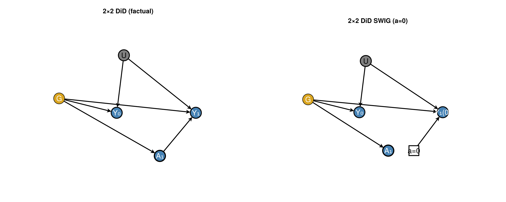
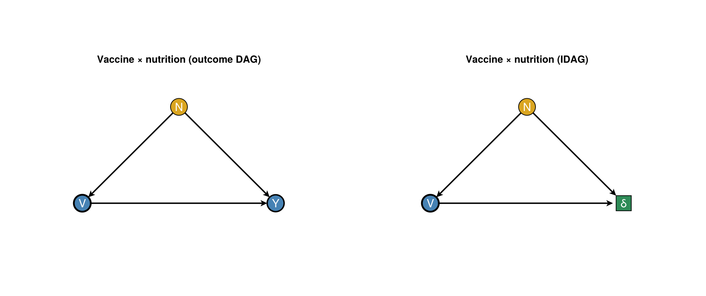

Visual grammar: interactions and DiD SWIGs
DAGMakie keeps a small, fixed visual vocabulary for effect modification / interaction figures and difference-in-differences (DiD) SWIGs. The grammar extends the publication defaults in dag_theme / default_style: white ground, no axes, in-node labels, steel-blue fills, goldenrod confounders, seagreen mediators / effect nodes, and gray hollow latents.
Modifier edges, effect-measure nodes, and SWIG fixed halves are pedagogical annotations. They do not change d-separation or identification. Use CausalInference.jl / CausalDynamics.jl for those queries.
House rule
- Identification / adjustment → ordinary outcome DAG (steel-blue / goldenrod).
- “Does $G$ change the effect of $A$?” → IDAG companion (green effect-measure node), or a dash-dot
modedge with an explicit caption. - “Is DiD justified?” → time-expanded factual DAG plus a SWIG for the untreated world (parallel trends lives on $Y_t(0)$, not on the factual DAG alone).
Node conventions
| Role | NodeType | Fill / stroke | Marker |
|---|---|---|---|
| Observed / default | Observed | :steelblue, stroke 1 | circle |
| Treatment | Treatment | :steelblue, stroke 2.5 | circle |
| Outcome | Outcome | :steelblue, stroke 2.0 darkgray | circle |
| Confounder / context | Confounder | :goldenrod | circle |
| Mediator | Mediator | :seagreen | circle |
| Latent | Latent | gray / hollow, stroke 2 | circle |
| Effect measure (IDAG) | EffectMeasure | :seagreen | rect |
| SWIG fixed half | SwigFixed | white, stroke 2, black label | rect |
Treatment and outcome stay in the steel-blue family so default / minimal / bold / presentation themes keep working; roles are stroke and shape, not a new rainbow of fills.
Edge conventions
| Kind | Style | Notes |
|---|---|---|
| Causal $→$ | solid black | usual GraphMakie arrows |
| Latent confounding $↔$ | dashed curve | MixedGraph |
| Removed by $do(·)$ | dashed, light | intervention plots |
| Modifier annotation | dash-dot, :darkgray | modifier_edge; caption required |
using DAGMakie
e = modifier_edge(1, 3)
(e.type, e.style, e.color, e.label)(Modifier, :dashdot, :darkgray, "mod")Example 1 — Vaccine × nutrition
Nutrition $N$ confounds vaccination $V$ and outcome $Y$, and may also modify the vaccine effect on an additive scale. The left panel is the outcome DAG for identification; the right panel is an IDAG where $Y$ is replaced by an effect-measure node $δ$ (Nilsson et al. style).
using DAGMakie, CairoMakie
fig = with_theme(dag_theme()) do
dagplot_vaccine_nutrition_interaction()
end
fig
Constructors if you need the specs separately:
Caption pattern: Left: structural DAG for identifying $E[Y \mid do(V)]$ after adjusting for $N$. Right: IDAG for additive effect modification; the effect node is not an outcome random variable.
Example 2 — Canonical 2×2 DiD SWIG
Two groups $G$, two periods, treatment $A_1$ only for the treated group in period 1, with unit-level latent $U$. The left panel is the factual time-expanded DAG; the right panel is a SWIG under $do(A_1 = 0)$. Incoming edges stay on the random half $A_1$; outflows leave from the fixed half $a=0$, and the post-period outcome is labelled $Y_1(0)$.
using DAGMakie, CairoMakie
fig = with_theme(dag_theme()) do
dagplot_did_swig()
end
fig
Constructors:
did_2x2_factual_spec/did_2x2_factual_layoutdid_2x2_swig_spec/did_2x2_swig_layoutdagplot_did_swig
Caption pattern: Left: two-period DAG with unit-level $U$. Right: SWIG for the untreated world; parallel trends is a statement about $Y_t(0)$, read on the SWIG.
Do not draw two-way fixed-effect dummies as causal nodes; show substantive latents (here $U$) instead.
Side-by-side companions
dagplot_side_by_side is the shared layout for outcome | IDAG and factual | SWIG pairs (same habit as dagplot_do_comparison).
using DAGMakie, CairoMakie
left = vaccine_nutrition_outcome_spec()
right = vaccine_nutrition_idag_spec()
fig = with_theme(dag_theme()) do
dagplot_side_by_side(
left, right;
titles = ("Outcome DAG", "IDAG"),
layout = vaccine_nutrition_layout(),
)
end
fig